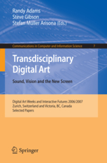
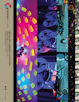
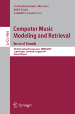

Publications
 JoAnn Kuchera-Morin, Matthew Wright, Graham Wakefield, Charlie Roberts, Dennis Adderton, Behzad Sajadi, Tobias Höllerer, Aditi Majumder. Immersive full-surround multi-user system design.
JoAnn Kuchera-Morin, Matthew Wright, Graham Wakefield, Charlie Roberts, Dennis Adderton, Behzad Sajadi, Tobias Höllerer, Aditi Majumder. Immersive full-surround multi-user system design.
Computers & Graphics, Volume 40, May, Pages 10-21. Elsevier, 2014.Roberts, C., Wakefield, G., and Wright, M. The Web Browser As Synthesizer And Interface (extended).
Computer Music Journal. MIT Press, 2014.
(To appear.)Wakefield, G. Open Worlds through Self-Differentiation.
In Worldmaking as Techné: Exploring Worlds of Participatory Art, Architecture, and Music, ed. de Campo, A., Hosale, M., Murrani, S. Riverside Architectural Press, 2014.
(To appear.)Sung-A Jang, Hyung-il Kim, Woontack Woo, Graham Wakefield. AiRSculpt: A Wearable Augmented Reality 3D Sculpting System.
In the Proceedings of HCI International. Springer, 2014.
(To appear)Wakefield, G., Roberts, C., Wright, M., Wood, T. and Yerkes, K.. Collaborative Live-Coding Virtual Worlds with an Immersive Instrument.
In the Proceedings of New Instruments for Musical Expression (NIME). Goldsmiths College University of London, 2014.So Jung Bang, Yoonji Song, Jae Dong Kim, Kiseul Suh, Chung-Kon Shi, Graham Wakefield, Sungju Woo. Digital Love Letter: A handwriting based interface for non-instant digital messaging.
In the Proceedings of HCI International. Springer, 2014.
(To appear) Wakefield, G., Höllerer, T., Kuchera-Morin, J., Roberts, C., Wright, M. Spatial Interaction in a Multi-User Immersive Instrument.
Wakefield, G., Höllerer, T., Kuchera-Morin, J., Roberts, C., Wright, M. Spatial Interaction in a Multi-User Immersive Instrument.
Computer Graphics & Applications, Vol 33, Issue 6 (Nov/Dec), pp 14 - 20. IEEE, 2013. Ji, H and Wakefield, G. Virtual World-Making in an Interactive Art Installation: Time of Doubles.
Ji, H and Wakefield, G. Virtual World-Making in an Interactive Art Installation: Time of Doubles.
In Virtual Worlds, ed. Heudin, J.-C.. Science eBook, 2013.Roberts, C., Wakefield, G., and Wright, M. The Web Browser As Synthesizer And Interface.
In the Proceedings of New Instruments for Musical Expression (NIME). Daejeon, Korea, 2013.
(Best paper award)Roberts, C., Wakefield, G., and Wright, M. Mobile Controls On-The-Fly: An Abstraction for Distributed NIMEs.
In the Proceedings of New Instruments for Musical Expression (NIME). Ann Arbor, Michigan, USA, 2013.Wakefield, G. and Ji, H. Becoming-there: Natural Presence in an Art of Artificial Ecologies.
In the Proceedings of International Symposium on Ubiquitous Virtual Reality (ISUVR). IEEE Computer Society (CSDL) digitial libraries, 2013.
(Keynote paper.)Wakefield, Graham. Real-Time Meta-Programming for Open-Ended Computational Arts.
Ph.D. Dissertation. University of California Santa Barbara, 2012.Ji, H., Wakefield, G. Virtual World-Making in an Interactive Art Installation: Time of Doubles.
Project Daejeon 2012/Energ-GI symposium catalog. Daejeon Museum of Art, Korea, 2012.Ji, H., Wakefield, G. City Life.
The Urban Organism exhibition catalogue. New Media Art Research Association (NMARA), Korea, 2012.Wakefield, G. and Smith, W. Cosm: A Toolkit for Composing Immersive Audio-Visual Worlds of Agency and Autonomy.
In the Proceedings of International Computer Music Conference (ICMC). Huddersfield, UK, 2011.Ji, H., Wakefield, G. Time of Doubles.
Type:Wall exhibition catalogue. Seoul Olympic Museum of Art (SOMA), Korea, 2011. Putnam, L., Wakefield, G., Ji, H., Alper, B., Adderton, D., Kuchera-Morin, J. Immersed in Unfolding Complex Systems.
Putnam, L., Wakefield, G., Ji, H., Alper, B., Adderton, D., Kuchera-Morin, J. Immersed in Unfolding Complex Systems.
In Beautiful Visualization: Looking at Data through the Eyes of Experts. O'Reilly Media, Inc., 2010.Wakefield, G., Smith, W. and Roberts, C. LuaAV: Extensibility and Heterogeneity for Audiovisual Computing.
In the Proceedings of Linux Audio Conference (LAC). Utrecht, The Netherlands, 2010. Wakefield, G. and Ji, H. Artificial Nature: Immersive World Making.
Wakefield, G. and Ji, H. Artificial Nature: Immersive World Making.
Lecture Notes in Computer Science, Vol 5484 (Proceedings of the Evolutionary Music and Art Workshop, Tübingen, 2009). Springer-Heidelberg, 2009.Smith, W., Wakefield, G. Computational Audiovisual Composition using Lua.
Communications in Computer and Information Science, Volume 7 (Transdisciplinary Digital Art: Sound, Vision and the New Screen), pp 213-228. Elsevier, 2009. Thompson, J., Kuchera-Morin, J., Novak, M., Overholt, D., Putnam, L., Wakefield, G., Smith, W. The Allobrain: An Interactive, Stereographic, 3D Audio Immersive Virtual World.
Thompson, J., Kuchera-Morin, J., Novak, M., Overholt, D., Putnam, L., Wakefield, G., Smith, W. The Allobrain: An Interactive, Stereographic, 3D Audio Immersive Virtual World.
International Journal of Human-Computer Studies, Volume 67, Issue 11 (Special issue on Sonic Interaction Design), pp 934–946. Elsevier, 2009.Wakefield, G. Makeshift, Machinic / Open.
In Machine Dreams, ed. Jeon, B. S. and Ji, H (ISBN: 978-89-963788-0-8). KoIAN, Seoul, Korea, 2009.Ji, H. and Wakefield, G. Artificial Nature.
In the Proceedings of Media Arts Science and Technology Conference. Santa Barbara, USA, 2009.Ji, H., Wakefield, G. Artificial Nature: Fluid Space.
In the Proceedings of Digital Experiences, ACM SIGGRAPH Asia Art Gallery & Emerging Technologies: Adaptation, Yokohama, Japan. ACM, New York, USA, 2009.
DOI: 10.1145/1665137.1665153Smith, W. and Wakefield, G. Computational Composition and Creativity.
In the Proceedings of Media Arts Science and Technology Conference. Santa Barbara, USA, 2009.Ji, H. and Wakefield, G. Artificial Nature: Research and Development.
In the Proceedings of The 2nd International Conference on Media Art and Information Aesthetics (MAIA). CAFA Art Museum, Beijing China, 2009.Smith, W. and Wakefield, G. Augmenting Computer Music with Just-In-Time Compilation.
In the Proceedings of International Computer Music Conference (ICMC). Montreal, Canada, 2009.Roberts, C., Wright, M., Kuchera-Morin, J., Putnam, L. and Wakefield G. Dynamic Interactivity inside the AlloSphere.
In the Proceedings of New Instruments for Musical Expression (NIME). Pittsburgh PA, USA, 2009.Zwick, R., Sklar, J. C., Wakefield, G., Hamilton, C., Norman, A., Folsom, D. Instructional Tools in Educational Measurement and Statistics (ITEMS) for School Personnel: Evaluation of Three Web-Based Training Modules.
Educational Measurement: Issues and Practice, Vol. 27(2) (National Council on Measurement in Education). Blackwell Publishing, 2008.Amatriain, X., Castellanos, J., Höllerer, T., Kuchera-Morin, J., Pope, S., Wakefield, G. and Wolcott, W. Experiencing Audio and Music in a Fully Immersive Environment.
Lecture Notes in Computer Science, Vol. 4969 (Computer Music Modeling and Retrieval. Sense of Sounds) pp 380-400. Springer Berlin Heidelberg, 2008.
DOI: 10.1007/978-3-540-85035-9_27Ji, H. and Wakefield, G. Artificial Nature as an Infinite Game.
In the Proceedings of ASIAGRAPH. Shanghai, China, 2008.Ji, H. and Wakefield, G. Artificial Nature as an Infinite Game.
In the Proceedings of International Symposium of Electronic Arts (ISEA). Singapore, 2008.Wakefield, G., Kuchera-Morin, J., Novak, M., Overholt, D., Putnam, L., Thompson, J., Smith, W. The AlloBrain: an Interactive Stereographic, 3D Audio Immersive Environment.
In the Proceedings of ACM Sonic Interaction Design Computer Human Interaction Conference (SID-CHI). Florence, 2008.Wakefield, Graham. Vessel: A Platform for Computer Music Composition, Interleaving Sample-Accurate Synthesis and Control.
M.S. Thesis. University of California Santa Barbara, 2007.Smith, W., Wakefield, G. Real-Time Multimedia Composition using Lua.
In the Proceedings of Digital Art Weeks (DAW). ETH Zurich, Denmark, 2007.Wakefield, G., Smith, W. Using Lua for Multimedia Composition.
In the Proceedings of International Computer Music Conference (ICMC). Copenhagen, Denmark, 2007.Wakefield, G. Real-Time Third-Order Ambisonic Extensions for Max/MSP with Musical Applications.
In the Proceedings of International Computer Music Conference (ICMC) . New Orleans, USA, 2006.Wakefield, Graham. Green Tara, Camino Outset, Audio-visual Canvasses.
M.Mus. Thesis. Goldsmiths College University of London, 2004.
Exhibitions & performances
Endless Current
Multi-projector interactive installation or personal head-mounted display.
Life is very Beautiful, Yeulmaru Exhibition Hall, Yeosu, Korea.
2014.2.18 - 2014.4.6 (Invited, National)Capitaine Futur, La Gaîté Lyrique, Paris, France.
Using Oculus Rift
2014.10.08 - 2015.02.08 (Invited, International)Demonstrations, Graduate School of Culture Technology, KAIST, Daejeon, Korea.
Using Oculus Rift
2013.11.1 (Invited, Regional)Korea Electronics Show 2013, KINTEX Convention Center, Ilsan, Korea.
Using Oculus Rift
2013.10.7 - 2013.10.10 (Commissioned, National)Life is very Beautiful, Space-K Gallery, KI Building, KAIST, Daejeon, Korea.
2013.10.10 - 2013.12.6 (Invited, National)Artience, City Hall, Daejeon, Korea.
Using Oculus Rift
2014.8.23 - 2014.9.2 (Invited, National)
Archipelago
Sand-sculpture with multiple projections and shadow interactions.
Capitaine Futur, La Gaîté Lyrique, Paris, France.
2014.10.08 - 2015.02.08 (Invited, International)Seoul Sangsangryok Baljeonso (Imagination powerhouse), City Hall, Seoul, Korea.
2014.10.01 - 2014.10.21 (Juried competition, International)Systems and Subversions, IDEA Space, Edith Kinney Gaylord Cornerstone Arts Center, Colorado Springs, USA.
2013.10.28 - 2013.11.5 (Invited, International)
Flux
Multi-projector interactive installation.
Hybrid Highlights, Digital Art Weeks, Museum of Modern Art, Seoul National University, Korea.
2014.10.02 - 2014.12.08 (Invited, International)Project Daejeon Biennale 2012: Energy (에네르기), Daejon Museum of Art, Daejon, Korea.
2012.9.19 - 2012.11.18 (Invited, International)Bits & Pieces, AlloSphere, California NanoSystems Institute, UCSB, USA.
2012.5.29 (Invited, Regional)Collider 04: Spectacle, Emily Davis Art Gallery, Myers School of Art, The University of Akron.
2012.3.19 - 2012.4.13 (Invited, National)7th Digital Art Festival Taipei: Artificial Nature, Songshan Cultural and Creative Park, Digital Art Center, Taipei, Taiwan.
2012.11.6 - 2012.11.25 (Invited, International)Microwave International New Media Festival, City Hall, Hong Kong.
2012.11.3 - 2012.11.25 (Invited, International)
Chronophotography / Chronosculpture
Mixed Media: 3D Printing, Lenticular Print, Rendered Image.
- Media + Life: Sensorial Collaboration, College of Art, Tokyo Polytechnic University, Tokyo, Japan.
2013.2.4 - 2013.2.7 (Invited, International)
Makeshift
Generative audiovisual composition.
Cross-Reality: Traversed & Encompassed Vision, Arts & Information Center, College of Art, Tokyo Polytechnic University, Japan.
2012.2.20 - 2012.2.22 (Invited, International)Something You Don't Know, California NanoSystems Institute, University of California Santa Barbara, USA.
2010.5.24 - 2010.5.27 (Invited, Regional)Machine Dreams, Soongsil University Information Technology Gallery, Seoul, Korea.
2009.6.16 - 2009.7.2 (Invited, International)
Time of Doubles
Multi-projector interactive installation.
Questionable Utility, TransLAB, California NanoSystems Institute, Santa Barbara, USA.
2011.6.9 (Juried, Regional)Type:wall, Seoul Olympic Museum of Art (SOMA), Korea.
2011.3.31 - 2011.5.29 (Invited, National)SIGGRAPH ASIA Art Gallery, Hong Kong Exhibition and Conference Centre, Hong Kong SAR.
2011.2.13 - 2011.2.15 (Juried, International)
Alien-Field
Generative video.
- Prologue/Prototype, Gallery Sobab, Gyeonggi-Do, Korea.
2011.4.29 - 2011.5.15 (Invited, National)
Fluid Space
Multi-projector interactive installation.
Collider 03: Transform, Emily Davis Gallery, Akron Ohio, USA.
2011.3.22 - 2011.4.16 (Invited, International)Hyperbody ProtoSpace, Technical University Delft, Holland.
2010.5.6 - 2010.5.7 (Invited, International)Space Exploration Exhibition, Chunjin Exhibition Center. Chunjin, China.
2009.7.25 - 2009.7.28 (Commissioned)ThisAbility, Central Academy of Fine Arts Art Museum (CAFA), Beijing, China.
2009.7 (Invited, International)A.L.I.C.E. MUSEUM, Seoul Olympic Museum of Art (SOMA), Korea.
2009.5.1 - 2009.6.21 (Juried, International)SIGGRAPH ASIA Art Gallery, Yokohama Pacifico Convention Center, Yokohama, Japan.
2009.12.17 - 2009.12.19 (Juried, International)Various events, TransLAB, Media Arts and Technology, Santa Barbara, USA.
2009 - 2010 (Visits, Regional)Various events, AlloSphere. California NanoSystems Institute, Santa Barbara, USA.
2009 - 2010 (Visits, National)
City Life (도시 생명)
Generative/narrative animation for media facade.
- Urban Organism: Triangle Screenscape, Seoul Square media facade. Seoul, Korea.
2011.10.11 - 2011.10.30 (Awarded, International)
Eternal Return
Multi-projector generative installation.
- Space Exploration Exhibition, Chunjin Exhibition Center. Chunjin, China.
2009.7.25 - 2009.7.28 (Commissioned)
t0 Coincident
Generative computational composition.
SUB|SCAPE, Gallery Loop, Seoul, Korea.
2009.6.19 (Invited, International)TransLAB (various events), University of California Santa Barbara, USA.
2007-2009 (Visits, National)Primavera Exhibition, College of Creative Studies Gallery, UCSB, USA.
2005.5 (Invited, Regional)
Infinite Game
Interactive multi-modal installation.
MAST: The Future of Interactive Media, Corwin Pavillion/MAT AlloSphere, University of California Santa Barbara, USA.
2009.1.29 - 2009.1.30 (Juried, National)Various events, AlloSphere. California NanoSystems Institute, Santa Barbara, USA.
2009 (Visits, National)ThisAbility vs. Disability, Total Museum of Contemporary Art, Seoul, Korea.
2008.7.22 - 2009.8.24 (Invited, International)ASIAGRAPH, Digital Gallery, Shanghai, China.
2008.6.27 - 2008.7.1 (Invited, International)Universal Electronic Art, Seongnam Art Center, Seongnam, Korea.
2008.10 - 2008.11 (Invited, International)
AlloBrain
Stereoscopic 3D/Ambisonic immersive environment based upon brain imaging (provided by Marcos Novak) and algorithmic behaviors.
AlloSphere, California Nano-Systems Institute, UCSB, USA.
First presented at the ACM-Multimedia Conference, Santa Barbara, 2006
2006 - present (Commissioned)Hyperbody ProtoSpace, Technical University Delft, Holland.
2006 (Invited, International)
Talks, lectures and workshops
Artificial Life with LuaAV.
Distortion Field 2014, Ewha University, Seoul, Korea
2014.2.9 (Workshop).Becoming There: Nature-Like Worldmaking.
Art Center, Hongik University, Korea
2013.11.20 (Invited lecture).Becoming There: Nature-Like Worldmaking.
TAC, Seoul Art Institute, Korea
2013.11.12 (Invited lecture).발생예술과 게임의 유사성 | Generative Art and Notgames.
AliceOn New Media Art Symposium: Next Level of Art Game, 더 미디엄 (서울시 서대문구 연희동 소재) | The Medium, Yonhee, Seodaemun-gu, Seoul, Korea
2013.10.19 (Invited lecture).Becoming There.
Cornerstone Arts Center, Colorado Springs, USA
2013.8.8 (Guest lecture).Natural Presence in an Art of Artificial Ecologies.
Korea Institute for Science and Technology (KIST), Seongbuk-gu, Seoul, Korea
2013.7.9 (Invited lecture).Open-Endedness and Code Generation in Creative Software.
Center for Computer Research in Music and Acoustics (CCRMA), Department of Music, Stanford University, USA
2012.2.8 (Invited lecture).Time of Doubles.
SIGGRAPH Asia Tech Talks, Hong Kong Exhibition and Conference Center, Hong Kong
Dec 2011 (Invited lecture).A-Life Art and Immersive Composition.
Department of Media Arts, Soongsil University, Seoul, Korea
May-Jun 2011 (Workshops (four session series)).Composing from Visual Input.
Department of Music, Hanyang University, Seoul, Korea
May 2011 (Workshop).Artificial Nature.
AliceOn | Yonhee, Seodaemun-gu, Seoul, Korea, Seoul Korea
May 2011 (Artist interview).Composing Artificial Natures.
The 9th Techno-Aesthetics Forum: From Artificial Intelligence Art to Artificial Life Art, AliceOn | Yonhee, Seodaemun-gu, Seoul, Korea, Seoul Korea
2011.4.30 (Invited lecture).Creating an Artificial Nature as an Open World.
The 5th Seoul DMC Media Forum: Media Arts and Technology Interdisciplinary Series, KGIT, Seoul Korea
2011.4.22 (Invited lecture).Creating an Artificial Nature as a Generative Art.
Duksung University, Seoul, Korea
2011.4.12 (Special lecture).Creating an Open World as an Infinite Game.
Akron University Computer Science Colloqium, Akron, USA
2011.3.10 (Invited lecture).Artificial Natures: Creating Nature-Like Aesthetic Experiences through Immersive Artificial Life Worlds.
Akron University Art Gallery, Akron, USA
2011.3.3 (Artist talk).Composing Artificial Natures.
Hyperbody ProtoSpace, Technical University Delft, Holland
2010.5.6 (Artist talk).Composing Artificial Natures using Cosm.
Hyperbody ProtoSpace, Technical University Delft, Holland
2010.5.4 (Workshop).Starting out with Max/MSP/Jitter: Creating Strange Loops.
AkronFilm, University of Akron, Ohio, USA
Feb 2011 (Workshop (open to the general public)).Cosm for Max/MSP/Jitter and the AlloSphere.
California Nanosystems Institute, University of California, Santa Barbara, USA
Sep 2011 (Workshop).Introduction to programming in Lua.
California Nanosystems Institute, University of California, Santa Barbara, USA
Sep 2011 (Workshop).LuaAV: Creating real-time audio-visual instruments.
California Nanosystems Institute, University of California, Santa Barbara, USA
Sep 2011 (Workshop).Composing Artificial Nature.
Hybrid Art Forum, Gallery Kunstdoc, Seoul, Korea
2010.1.9 (Artist talk).The Aesthetics of Code.
SIGGRAPH ASIA, Yokohama Pacifico Convention Center, Yokohama, Japan
2009.12.19 (Artist talk).Artificial Nature.
The Aesthetics of Code: Department of Art Symposium, University of California Santa Barbara, USA
2009.6.2 (Artist talk).Makeshift.
The Aesthetics of Code: Department of Art Symposium, University of California Santa Barbara, USA
2009.6.2 (Artist talk).Cosm.
Max/MSP/Jitter Expo ’74, Mission Bay Conference Center, San Francisco, USA
2009.8.21 (Invited talk).Artificial Nature as an Infinite Game.
EvoMUSART, European Workshops on Applications of Evolutionary Computation, Tübingen, Germany
2009.4.15 (Presentation).From Computer Music to Computational Creativity.
Goldsmiths Electronic Music Studios. Goldsmiths University of London, UK
2009.4.7 (Artists talk).Data Visualization in The AlloSphere.
TED
2009.2.1 (Contributed content to JoAnn Kuchera-Morin's TED Talk).Computational Creativity.
First Workshop on Media Arts Science and Technology (MAST: The Future of Interactive Media), University of California Santa Barbara
2009.1.30 (Juried talk).Currents in Media Arts & Technology.
Department of Media Art Aesthetics and Technology. Soong-Sil University, Seoul, Korea
2008.7.11 (Invited talk).Worldmaking with Max/MSP/Jitter/Cosm.
TransLAB, University of California, Santa Barbara, USA
Dec 2008 (Workshop).Artificial Nature & Evolutionary Art.
Chung-Ang College of Engineering. Chung-Ang University, Seoul, Korea
2008.7.8 (Invited talk).Toward the AlloSphere: Intensive Art, Immersive Worlds.
University of California Digital Arts Network (UCDArNet), UCLA, Los Angeles, USA
2006.3.4 (Juried lecture).
Cover Art
 뉴미디어 아트와 게임 예술 (New Media Art & Game Art),
뉴미디어 아트와 게임 예술 (New Media Art & Game Art),
유원준 (Wonjun Yu). March 29, 2013.
ISBN 978-89-6680-153-4 93680.
(Cover art + featured artwork). Aesthetics of Sustainable Architecture,
Aesthetics of Sustainable Architecture,
Ed. Sang Lee. 010, Holland, 2011.
(Cover Art)